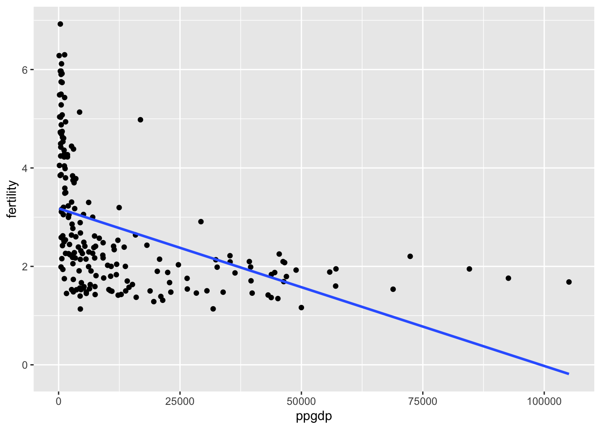

Code
library(alr4)
library(smss)
library(ggplot2)
library(dplyr)
data(UN11)
data(water)
data("Rateprof")
data("student.survey")library(alr4)
library(smss)
library(ggplot2)
library(dplyr)
data(UN11)
data(water)
data("Rateprof")
data("student.survey")Predictor: PPGDP Response: Fertility
ggplot(UN11, aes(x = ppgdp, y = fertility)) +
geom_point() +
geom_smooth(method = 'lm', se = FALSE)`geom_smooth()` using formula = 'y ~ x'
ggplot(UN11, aes(x = log(ppgdp), y = log(fertility))) +
geom_point(color = 'blue') +
geom_smooth(method = 'lm', color = 'blue', se = FALSE) `geom_smooth()` using formula = 'y ~ x'As we can see in both the scatter plot and the regression coefficients, the slope of the equation does not change. We would not expect it to since we are not altering the relationship between between our variables of interest, simply the unit it is denoted in. The only thing that changes is the intercept, since we shift the x values to the left by converting their units.
Likewise, the correlation does not change because we do not change the relationship by changing the unit of measurement.
fit<- lm(log(fertility) ~ log(ppgdp), data = UN11)
summary(fit)
Call:
lm(formula = log(fertility) ~ log(ppgdp), data = UN11)
Residuals:
Min 1Q Median 3Q Max
-0.79828 -0.21639 0.02669 0.23424 0.95596
Coefficients:
Estimate Std. Error t value Pr(>|t|)
(Intercept) 2.66551 0.12057 22.11 <2e-16 ***
log(ppgdp) -0.20715 0.01401 -14.79 <2e-16 ***
---
Signif. codes: 0 '***' 0.001 '**' 0.01 '*' 0.05 '.' 0.1 ' ' 1
Residual standard error: 0.3071 on 197 degrees of freedom
Multiple R-squared: 0.526, Adjusted R-squared: 0.5236
F-statistic: 218.6 on 1 and 197 DF, p-value: < 2.2e-16cor(log(UN11$ppgdp), log(UN11$fertility))[1] -0.7252483fit<- lm(log(fertility) ~ log(ppgdp/1.33), data = UN11)
summary(fit)
Call:
lm(formula = log(fertility) ~ log(ppgdp/1.33), data = UN11)
Residuals:
Min 1Q Median 3Q Max
-0.79828 -0.21639 0.02669 0.23424 0.95596
Coefficients:
Estimate Std. Error t value Pr(>|t|)
(Intercept) 2.60643 0.11664 22.35 <2e-16 ***
log(ppgdp/1.33) -0.20715 0.01401 -14.79 <2e-16 ***
---
Signif. codes: 0 '***' 0.001 '**' 0.01 '*' 0.05 '.' 0.1 ' ' 1
Residual standard error: 0.3071 on 197 degrees of freedom
Multiple R-squared: 0.526, Adjusted R-squared: 0.5236
F-statistic: 218.6 on 1 and 197 DF, p-value: < 2.2e-16cor(log(UN11$ppgdp/1.33), log(UN11$fertility))[1] -0.7252483ggplot(UN11, aes(x = log(ppgdp), y = log(fertility))) +
geom_point(color = 'blue') +
geom_smooth(method = 'lm', color = 'blue', se = FALSE) +
geom_point(aes(x=log(ppgdp/1.33)), color = 'red') +
geom_smooth(aes(x=log(ppgdp/1.33)), method = 'lm', color = 'red', se = FALSE)`geom_smooth()` using formula = 'y ~ x'
`geom_smooth()` using formula = 'y ~ x'There are clear, linear relationships between runoff (BSAAM) and precipitation at OPBPC, OPRC, and OPSLAKE. There also may be linear relationships between APMAM, APSB, and APSLake, but they appear to be right-skewed.
These same patterns also hold when comparing precipitation locations. The O locations display multicollinearity with each other, as do the A locations. Similarly, when compared to each other, the A locations and O locations might also be related, but those relations appear to be skewed.
When comparing year to precipitation and runoff, there doesn’t appear to a be a linear relationship.
pairs(water)
col_list <- c('quality', 'helpfulness', 'clarity', 'easiness', 'raterInterest')
pairs(Rateprof[col_list])
Visually, there does seem to be a linear relationship between religiosity and political ideology. As religious participation increases, respondents move right on the political spectrum. This observed relationship is supported by our regression model. Compared to those who never attend church, and assuming the very liberal is the baseline, those who attend occasionally move 0.25 points to the right. Those who attend most weeks weeks are 2.16 points to the right on the political spectrum, and those who attend every week 2.6 points to the right from those who never attend church. However, occasionally is not statistically significant while most weeks and every week are statistically significant. The R-Squared metric shows us that religiosity explains about 39 percent of variation in political ideology. The entire model is statistically significant.
ggplot(data = student.survey, aes(x = re, y = pi)) +
geom_count()re_dummies <- model.matrix(~ re - 1, data = student.survey)
re_dummies_df <- as.data.frame(re_dummies)
re_pi_df <- cbind(student.survey, re_dummies_df)
colnames(re_pi_df) <- gsub(" ", "_", colnames(re_pi_df))
pi_mapping <- c("very liberal" = -3, "liberal" = -2, "slightly liberal" = -1, "moderate" = 0,
"slightly conservative" = 1, "conservative" = 2, "very conservative" = 3)
re_pi_df$pi_numeric <- as.numeric(pi_mapping[as.character(re_pi_df$pi)])
re_pi_df$re <- factor(re_pi_df$re, ordered = FALSE)
re_pi_df$re <- relevel(factor(re_pi_df$re), ref = "never")
fit <- lm(pi_numeric ~ re, data = re_pi_df)
summary(fit)
Call:
lm(formula = pi_numeric ~ re, data = re_pi_df)
Residuals:
Min 1Q Median 3Q Max
-2.8889 -0.5172 -0.2667 1.2040 2.7333
Coefficients:
Estimate Std. Error t value Pr(>|t|)
(Intercept) -1.7333 0.3394 -5.107 4.08e-06 ***
reoccasionally 0.2506 0.4181 0.599 0.551374
remost weeks 2.1619 0.6017 3.593 0.000691 ***
reevery week 2.6222 0.5543 4.731 1.56e-05 ***
---
Signif. codes: 0 '***' 0.001 '**' 0.01 '*' 0.05 '.' 0.1 ' ' 1
Residual standard error: 1.315 on 56 degrees of freedom
Multiple R-squared: 0.3872, Adjusted R-squared: 0.3544
F-statistic: 11.8 on 3 and 56 DF, p-value: 4.282e-06Visually, a relationship is plausible. However, there appear to be a few outliers, which may be exerting undue influence. After dropping those outliers, a relationship seems less likely. The model suggests that for every 1 hour increase in tv, gpa drops by 0.02. However, this finding is not significant.
data("student.survey")
ggplot(data = student.survey, aes(x = tv, y = hi)) +
geom_point() +
geom_smooth(method='lm')`geom_smooth()` using formula = 'y ~ x'
#dropping outliers
s_survey <- student.survey[student.survey$tv<=20,]
ggplot(data = s_survey, aes(x = tv, y = hi)) +
geom_point() +
geom_smooth(method='lm')`geom_smooth()` using formula = 'y ~ x'fit <- lm(hi ~ tv, data = s_survey)
summary(fit)
Call:
lm(formula = hi ~ tv, data = s_survey)
Residuals:
Min 1Q Median 3Q Max
-1.24383 -0.25819 0.05617 0.34192 0.71330
Coefficients:
Estimate Std. Error t value Pr(>|t|)
(Intercept) 3.45819 0.10871 31.811 <2e-16 ***
tv -0.02144 0.01486 -1.443 0.155
---
Signif. codes: 0 '***' 0.001 '**' 0.01 '*' 0.05 '.' 0.1 ' ' 1
Residual standard error: 0.4584 on 55 degrees of freedom
Multiple R-squared: 0.03648, Adjusted R-squared: 0.01896
F-statistic: 2.082 on 1 and 55 DF, p-value: 0.1547